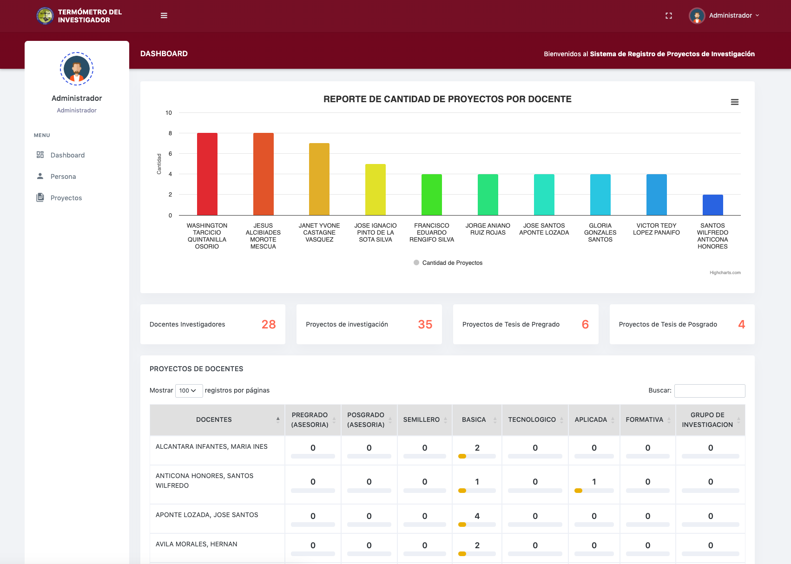
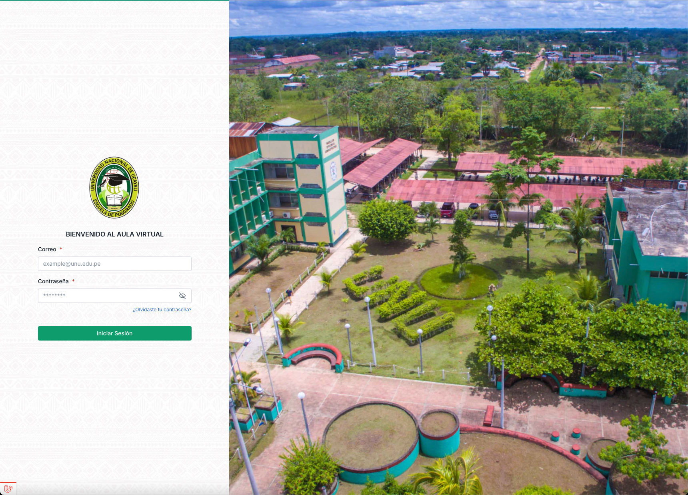

Profesional en Ingeniería de Sistemas, con 2 años experiencia en desarrollo web utilizando Laravel y Livewire. He trabajado en la Escuela de Posgrado de la Universidad Nacional de Ucayali desarrollando el sistema de inscripciones y evaluaciones, donde adquirí sólidos conocimientos en Livewire y Laravel. Posteriormente, brindé soporte a un sistema de gestión académica en la UNIA, y actualmente utilizo Laravel 11 y Livewire 3, optimizando el rendimiento de las aplicaciones para asegurar una experiencia de usuario fluida y eficiente.
Mayo 2024 - Actualidad (7 meses)
Desarrollé un sistema de Aula Virtual para la Escuela de Posgrado utilizando Laravel, Livewire, Bootstrap, HTML, CSS, PHP y MySQL. Colaboré con diversas áreas para garantizar que las necesidades académicas y administrativas fueran cubiertas, implementando mejoras continuas para ofrecer una experiencia de usuario óptima.
Enero 2021 - Septiembre 2024 (3 años 9 meses)
Brindé soporte técnico y mantenimiento de sistemas, desarrollando y actualizando la página web de la empresa utilizando Laravel y MySQL. También proporcioné soporte interno, resolviendo incidencias relacionadas con hardware y software.
Noviembre 2023 - Marzo 2024 (5 meses)
Administré y di soporte a un sistema de gestión académica, desarrollando y optimizando funcionalidades en Laravel. Aseguré la seguridad, eficiencia y usabilidad del sistema, proporcioné soporte técnico y documenté los procesos.
Febrero 2023 - Agosto 2023 (7 meses)
Diseñé y desarrollé aplicaciones web con Laravel y Livewire, implementando funcionalidades clave para la gestión de inscripciones, evaluaciones y matrículas. Trabajé con el equipo para resolver problemas técnicos y mejorar el rendimiento del sistema.
Mayo 2022 - Enero 2023 (9 meses)
Administré el portal web de la universidad utilizando Joomla, gestioné el aula virtual de posgrado y creé manuales de usuario. También realicé la digitalización de datos para actualizar la base de datos estudiantil.
Plataforma para gestionar inscripciones y evaluaciones para la Escuela de Posgrado de la Universidad Nacional de Ucayali, desarrollada con Laravel 10 y Livewire 2.
Aplicación web para medir el impacto de la producción científica de los docentes de la Universidad Nacional de Ucayali, utilizando Laravel 9.
Plataforma para la interacción entre docentes y alumnos para la Escuela de Posgrado de la Universidad Nacional de Ucayali, usando Laravel 11, Livewire 3 y Alpine.js.